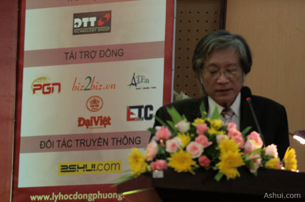
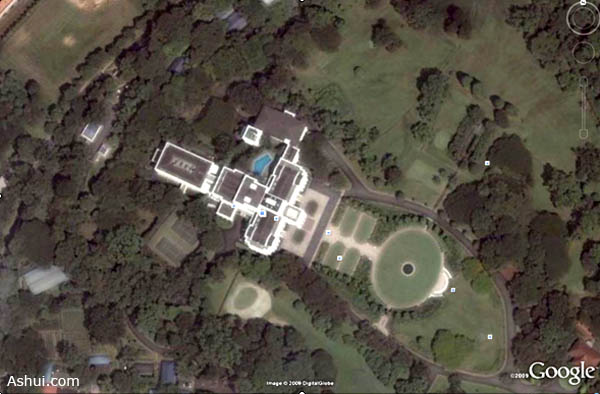
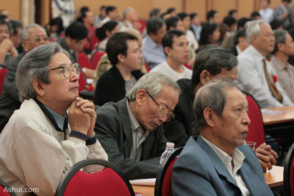

Những phân tích của các nhà nghiên cứu cho thấy, Phong thủy là một bộ môn khoa học xác định sự phù hợp với cảnh quan môi trường, thiên nhiên hài hòa với cuộc sống con người, chứ không phải là loại tín ngưỡng bí ẩn.
Phong thủy là một khái niệm khá quen thuộc đối với nhiều người. Nó thường được hiểu là một phương pháp ứng dụng trong kiến trúc và xây dựng Đông Phương cổ, dựa trên phương pháp luận của thuyết Âm dương ngũ hành.
Nhưng sự thiếu hụt các tài liệu nghiên cứu khoa học về phong thủy trong một thời gian dài, cùng với những thành kiến duy ý chí về nó đã biến môn này thành một thứ bí ẩn, thậm chí bị coi là một thứ mê tín dị đoan.
{kind=link}
Lần đầu tiên, một hội thảo về phong thủy trong kiến trúc được tổ chức rộng rãi tại Hà Nội, với sự
tham gia của hàng trăm đại biểu.
Nhằm tháo gỡ những vướng mắc về cách hiểu Phong thủy, nhà nghiên cứu Nguyễn Vũ Tuấn Anh, cùng Trung tâm Nghiên cứu Lý học Đông Phương đã dày công tìm hiểu và chứng minh tính khoa học của bộ môn có thời gian tồn tại lâu nhất trong lịch sử văn minh nhân loại này.
Phong thủy Đông Phương ứng dụng trong kiến trúc và xây dựng không phải là yếu tố kĩ thuật xử lý vật liệu, độ bền kết cấu trong xây dựng mang tính trực quan. Nó có tính hệ thống cấu trúc những nguyên tắc, quy định về các yếu tố địa lý, khí tượng, môi trường sinh thái học, cảnh quan và kiến trúc hình thể.
Việc xác minh bản chất khoa học của Phong thủy mà các nhà nghiên cứu đưa ra dựa trên việc xem xét tính hệ thống – lịch sử; tính nhất quán và hợp lý dựa trên nội dung cấu trúc trong phương pháp luận, tính tiên tri – thể hiện tính quy luật của phương pháp được nhận thức; tính khách quan – khả năng phản ánh thực tại và sự giải thích thực tại theo khái niệm của nó.
Những phân tích của các nhà nghiên cứu cho thấy, Phong thủy là một bộ môn khoa học xác định sự phù hợp với cảnh quan môi trường, thiên nhiên hài hòa với cuộc sống con người.
Khoa Phong thủy xác định những tiêu chí, nguyên tắc, quy ước dựa trên thực tại khách quan trong kiến trúc và xây dựng cổ xưa, nhưng không phủ nhận những tri thức và tiêu chí, yêu cầu trong kiến trúc hiện đại.

Nhà nghiên cứu Nguyễn Vũ Tuấn Anh – Giám đốc Trung tâm Lý học Đông Phương
Hiệu chỉnh từ cổ thư chữ Hán và hoàn thiện
Nhóm nghiên cứu đã tìm ra những điểm sai lệch và thất truyền từ nguyên lý căn để của Phong thủy trong cổ thư chữ Hán – gọi là “Hậu Thiên Văn Vương phối Lạc Thư”.
Sau khi hiệu chỉnh lại nguyên lý căn để của phương pháp nói trên thành “Hậu Thiên Lạc Việt phối Hà Đồ”, nhóm nghiên cứu đã từng bước hệ thống và phục hồi lại toàn bộ thuyết Âm dương ngũ hành, trong đó có khoa Phong thủy.
Đây chính cơ sở đối chiếu để tìm hiểu, giải thích sự vận động, tương tác có tính quy luật vũ trụ, thiên nhiên, cuộc sống con người.
Riêng khoa Phong thủy, những phát hiện rời rạc trong lịch sử văn minh Hán, thực chất là những phương pháp ứng dụng cụ thể của từng trạng thái tương tác gây ảnh hưởng đến cuộc sống con người:
- Tương tác của từ trường trái đất lên vị trí nhà và ảnh hưởng đến con người (trường phái Bát trạch)
- Tương tác của cảnh quan môi tường thiên nhiên lên quanh khu nhà. (trường phái Loan đầu)
- Tương tác của cấu trúc ngôi nhà liên quan đến môi trường và con người. (trường phái Dương trạch tam yếu)
- Tương tác có tính quy luật và chu kỳ của vũ trụ trong bầu không gian của Thái dương hệ (Trường phái Huyền Không)
Tính hệ thống, nhất quán trong Phong thủy Đông phương chỉ được xác định khi phục hồi trên nguyên lý căn để xuyên suốt của thuyết Âm Dương Ngũ hành là Hậu Thiên Lạc Việt phối Hà Đồ.
Không căn cứ trên nguyên lý này, thì Phong thủy theo văn bản cổ không có tính hệ thống, nhất quán và không có khả năng phản ánh hợp lý một thực tế khách quan, ngoại trừ hiệu quả ứng dụng.
Ứng dụng Phong thủy trên khắp thế giới
Nói về các ứng dụng Phong thủ trong kiến trúc Phương Tây và Việt Nam, kiến trúc sư Phạm Cương đưa ra những ví dụ cụ thể.
Vị trí tọa lạc, kết hợp hình thể đẹp đẽ, tỉ lệ hài hòa cùng bố cục đủ cả thanh long, bạch hổ, huyền vũ và chu tước (4 yếu tố trong Phong thủy Loan đầu) đã giúp Nhà trắng của nước Mỹ trở thành một tòa nhà có vị thế đáng nể trên thế giới.

Tòa nhà chính phủ Singapore
Sử dụng bản đồ vệ tinh để quan sát tòa nhà chính phủ Singapore, cũng nhận thấy ý đồ phong thủy rõ ràng: tòa nhà thiết kế theo dạng hình chữ T (chữ Đinh) – hình ảnh con triện và con dấu – một chỉnh thể hoàn thiện, biểu hiện sự vững bền trên chính trường.
Một số công trình kiến trúc Việt cũng được phân tích từ góc độ Phong thủy:
Dinh Độc lập, tuy cũng được thiết kế hình tượng con triện và con dấu, nhưng lại phạm vào hình tượng lộ cốt trong Phong thủy, khiến người đứng đầu sử dụng công trình không được thịnh vượng lâu dài.

Từ gia đình đến vấn đề Phong thủy quốc gia
Hội thảo đặt những vấn đề rất chi tiết trong thiết kế các công trình xây dựng dưới góc độ Phong thủy như: xác định tâm của một khu đất khi xây dựng nhà cửa, cắt nghĩa là lý do chọn hướng nhà, thiết kế các cửa ra vào, cách bài trí sắp đặt đồ vật trong nhà… Tất cả đều nhằm mục đích giúp cho luồng khí thông suốt, thoáng mát, phục vụ sức khỏe con người.
Đồng thời, nhiều đại biểu cũng đặt vấn đề về Phong thủy quốc gia như việc chúng ta nên xác định trung tâm của Hà Nội là ở đâu…
Theo đó, những công trình xây dựng kiến trúc quan trọng của đất nước, nên được tham khảo các nhà nghiên cứu Phong thủy để tìm ra vị thế đắc địa, đảm bảo sự hài hòa đất, nước, thiên nhiên và con người bằng những phương pháp tính toán khoa học.

Hội thảo thu hút hàng trăm đại biểu lắng nghe, tranh luận.